Chapter 1 Descriptive Statistics fo One Variable
Understanding the central tendency and the distribution of a variable is an essential part of an empirical study. We will utilize Stata to calculate and display descriptive statistics of central tendency, variability, and distribution.
1.1 Central Tendency
For central tendency, we can calculate the mean, median, and mode as previous discussed in SfBE. For measuring central tendency, the choice depends upon the type of variable you are working with. What is the level of measurement? What is the distribution? What are you trying to show?
| Level.of.Measurement | Mode | Median | Mean |
|---|---|---|---|
| Categorical with no order (Nominal), Categorical with Order (Ordinal), Quantitative (Discrete, Continuous, Interval | Yes | No | No |
| Categorical with no order (Nominal), Categorical with Order (Ordinal), Quantitative (Discrete, Continuous, Interval | Yes | Yes | Yes |
| Categorical with no order (Nominal), Categorical with Order (Ordinal), Quantitative (Discrete, Continuous, Interval | Yes | Yes | Yes |
- For nominal categories variables, you can use the mode.
- For ordinal categorical variables, you can use the mode and possibly the mean.
- For quantitative variables, you can use mean, median, and mode.
Let’s look at an example from the General Social Survey from Acock (2023). We will look at a ordinal categorical variable called “childs” which is the number of children in a household.
use descriptive_gss, clear
graph bar (count) if childs > 0, over(childs,gap(0)) ///
bar(1, lcolor(black)) title("Number of children in families with at least one child") ///
caption("descriptive_gss.dta") ytitle("Frequency") lintensity(100) 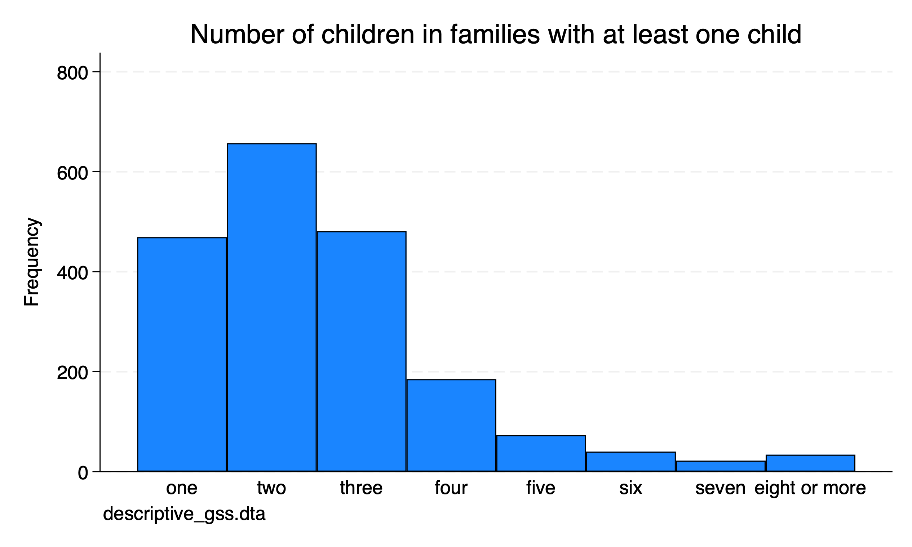
It is clear that the mode is 2, but what about the median or mean for the ordinal variable?
number of children
-------------------------------------------------------------
Percentiles Smallest
1% 1 1
5% 1 1
10% 1 1 Obs 1,961
25% 2 1 Sum of wgt. 1,961
50% 2 Mean 2.54819
Largest Std. dev. 1.458909
75% 3 8
90% 4 8 Variance 2.128416
95% 5 8 Skewness 1.468189
99% 8 8 Kurtosis 5.700491From our summary statistics we can see that family with kids the median is 2 and the mean rounded up to 3. The data are slighly skewed since the mean > median and mean > mode.
1.2 Distribution
For quantitative data, we want to the dispersion along with central tendency. Are the values concentrated in the middle or are they widely spread out? If we look at hypothetical SAT scores from applications to two universities. Both university have the same mean of 1,000 but different standard deviations are different. One university application SAT scores has a \(SD=100\) and the other university application SAT scores has a \(SD=200\). Let’s plot the distribution of these SAT scores.
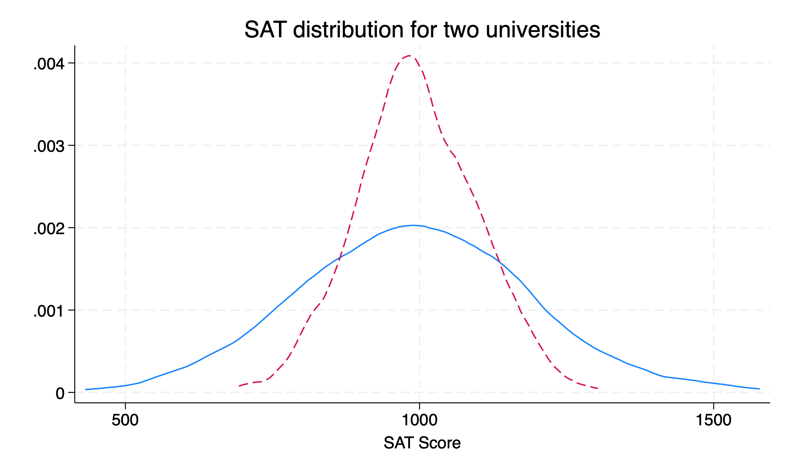
Both are normally distributed and have idential means \(\mu=1000\), but the university with a smaller \(SD\) has a distribution tightly packed around mean. The other distribution of SAT scores is much more dispersed around the mean.
1.3 Nominal (Unordered) Categories
Nominal categorical variable do not have a natural order. Examples include ethnicity, sex, martial status, car color, food categories, etc. To summarize a unordered, nominal categorical variable is to utilize frequencies and the mode. We will use the “descriptive_gss.dta” dataset.
1.3.1 Frequenices
The tabulate command can be used to get frequencies of distributions for sex and marital status. Acock uses polviews as well, but I would agrue that there can be a clear order to political views.
Please note that the tabulate command for one-way tabulation can take one variable at a time. If we add two variables, we will conducte a two-way tabulation. If we want to conduct multiple one-way tabulations on one line, we can use the tab1 command. Please note that tab2 will conduct two-way tabulation of all combinations of variable included.
respondents |
sex | Freq. Percent Cum.
------------+-----------------------------------
male | 1,228 44.41 44.41
female | 1,537 55.59 100.00
------------+-----------------------------------
Total | 2,765 100.00
-> tabulation of sex
respondents |
sex | Freq. Percent Cum.
------------+-----------------------------------
male | 1,228 44.41 44.41
female | 1,537 55.59 100.00
------------+-----------------------------------
Total | 2,765 100.00
-> tabulation of marital
marital |
status | Freq. Percent Cum.
--------------+-----------------------------------
married | 1,269 45.90 45.90
widowed | 247 8.93 54.83
divorced | 445 16.09 70.92
separated | 96 3.47 74.39
never married | 708 25.61 100.00
--------------+-----------------------------------
Total | 2,765 100.00If we use the tabulate command with both marital and sex, we will calculate a two-way tabulation.
respondent | marital status
s sex | married widowed divorced separated never mar | Total
-----------+-------------------------------------------------------+----------
male | 613 46 191 33 345 | 1,228
female | 656 201 254 63 363 | 1,537
-----------+-------------------------------------------------------+----------
Total | 1,269 247 445 96 708 | 2,765 Let’s take a look polviews.
think of self as |
liberal or |
conservative | Freq. Percent Cum.
---------------------+-----------------------------------
extremely liberal | 47 3.53 3.53
liberal | 143 10.74 14.27
slightly liberal | 159 11.95 26.22
moderate | 522 39.22 65.44
slghtly conservative | 209 15.70 81.14
conservative | 210 15.78 96.92
extrmly conservative | 41 3.08 100.00
---------------------+-----------------------------------
Total | 1,331 100.00I would agrue that there is a clear natural order to this variable.
Ben Jann in 2007 provided a revision of tab1 called fre. We can install his command using the ssc install command. The output from the fre command is a bit easier to read compared to tab1
sex -- respondents sex
--------------------------------------------------------------
| Freq. Percent Valid Cum.
-----------------+--------------------------------------------
Valid 1 male | 1228 44.41 44.41 44.41
2 female | 1537 55.59 55.59 100.00
Total | 2765 100.00 100.00
--------------------------------------------------------------
marital -- marital status
---------------------------------------------------------------------
| Freq. Percent Valid Cum.
------------------------+--------------------------------------------
Valid 1 married | 1269 45.90 45.90 45.90
2 widowed | 247 8.93 8.93 54.83
3 divorced | 445 16.09 16.09 70.92
4 separated | 96 3.47 3.47 74.39
5 never married | 708 25.61 25.61 100.00
Total | 2765 100.00 100.00
---------------------------------------------------------------------
polviews -- think of self as liberal or conservative
----------------------------------------------------------------------------
| Freq. Percent Valid Cum.
-------------------------------+--------------------------------------------
Valid 1 extremely liberal | 47 1.70 3.53 3.53
2 liberal | 143 5.17 10.74 14.27
3 slightly liberal | 159 5.75 11.95 26.22
4 moderate | 522 18.88 39.22 65.44
5 slghtly conservative | 209 7.56 15.70 81.14
6 conservative | 210 7.59 15.78 96.92
7 extrmly conservative | 41 1.48 3.08 100.00
Total | 1331 48.14 100.00
Missing . | 1434 51.86
Total | 2765 100.00
----------------------------------------------------------------------------1.3.2 Pie Charts
DO NOT USE PIE CHARTS!
There is no reason to use a pie chart when you can use a bar chart.
For pedagologic purposes only, you can create a pie chart with the graph pie command. Please do not use this.
graph pie, over(marital) cw sort(marital) ///
title(Marital status in the United States) note(descriptive_gss.dta) ///
scheme(s2color)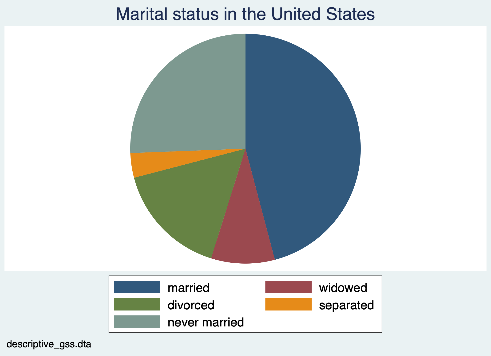
What I do want to bring to your attention is the options title, note, and scheme. We can add a title to the graph, a caption note, and a color scheme.
1.3.3 Bar Charts
To display frequencies of nomimal variables, we should use bar charts. We have a couple of options with graph bar. We can display frequencies or we can display percentages.
First, we can use a bar chart with frequencies. We will use the graph bar command. However, we will not enter graph bar marital. What we need to do is add (count) for frequencies and the option over(var). We will also want to label the data with the option blabel(bar, format(%9.2f))
graph bar (count), over(marital) scheme(s2color) blabel(bar, format(%9.0f)) title("Marital status in the United States") note("descriptive_gss.dta")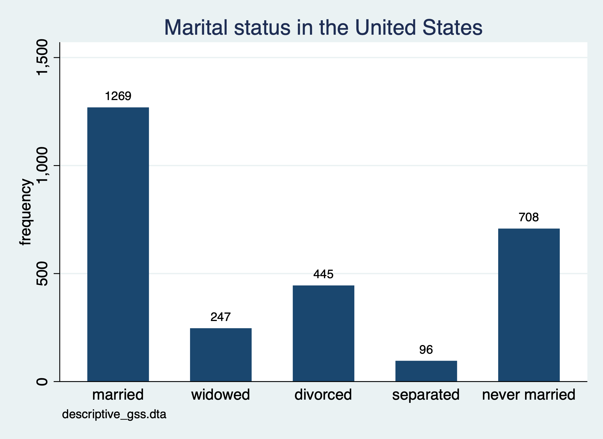
We can create a similar bar chart, but we will used percentages instead of frequencies. In order to create this type of chart we do not add (count) to the graph bar command.
graph bar, over(marital) scheme(s2mono) blabel(bar, format(%9.2f)) title("Marital status in the United States") note("descriptive_gss.dta")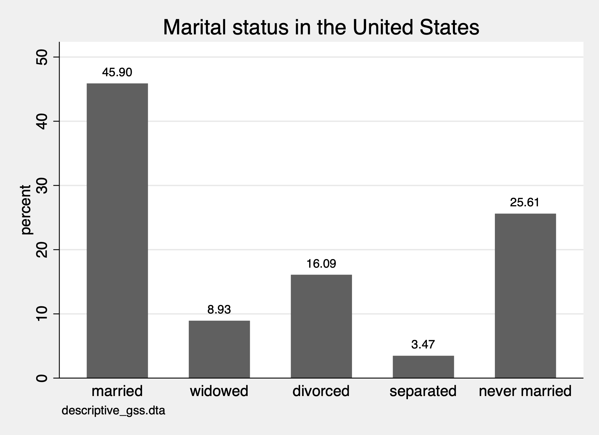
We can actually use histograms with the option discrete. Additional options for formatting are provided. percentage converts the two-decimal y-axis into two digit whole numbers. gap option increases the shape between bars.addlabel add values over the bars. xlabel add values to the x-axis.
histogram marital, discrete percent gap(10) addlabel xlabel(, valuelabel) ///
title(Marital status in the United States) note("descriptive_gss.dta") scheme(s2gcolor) 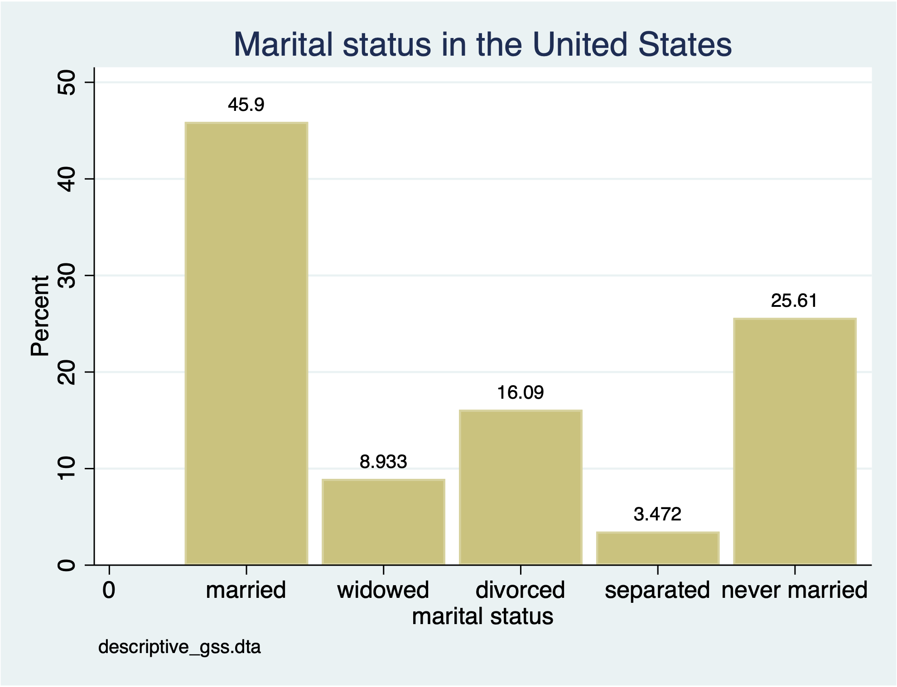
You may have noticed that the prior graph does not produce the frequencies we need. If we will use histogram command with the discrete option, then we need to add the option freq to create a freqency chart with the histogram command.
histogram marital, discrete frequency gap(10) addlabel xlabel(, valuelabel) ///
title(Marital status in the United States) note("descriptive_gss.dta") scheme(sj) 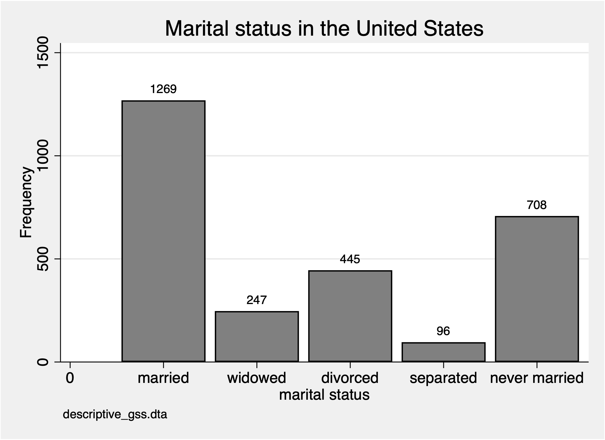
1.4 Ordinal Categories
For ordinal categorical variables, we can use mode and median for central tendency. We can calculate the median, or \(50^{th}\) percentile, with the summarize command. To get different percentiles, including the median, we need to add the detail option.
think of self as liberal or conservative
-------------------------------------------------------------
Percentiles Smallest
1% 1 1
5% 2 1
10% 2 1 Obs 1,331
25% 3 1 Sum of wgt. 1,331
50% 4 Mean 4.124718
Largest Std. dev. 1.385016
75% 5 7
90% 6 7 Variance 1.918268
95% 6 7 Skewness -.1509408
99% 7 7 Kurtosis 2.693351The median value is 4 our of the 1 through 7. What does 4 imply?
We can also use the tabulate or tab1 commands to find the mode and what each value means. If we want to show the value and the value label, we can run the numlabel command.
-> tabulation of polviews
think of self as |
liberal or conservative | Freq. Percent Cum.
------------------------+-----------------------------------
1. extremely liberal | 47 3.53 3.53
2. liberal | 143 10.74 14.27
3. slightly liberal | 159 11.95 26.22
4. moderate | 522 39.22 65.44
5. slghtly conservative | 209 15.70 81.14
6. conservative | 210 15.78 96.92
7. extrmly conservative | 41 3.08 100.00
------------------------+-----------------------------------
Total | 1,331 100.00The mode is 4, which is moderate. So the median and mode are the same for polviews variable.
For distribution, we can use the tabulate or tab1 commands and we can use graph bar (count), over(var) and histgram var, discrete freq commands.
First, we will use a histogram var, discrete, but we will change the color scheme.
histogram polviews, discrete frequency start(1) ///
title(Political views in the United States) subtitle(by adult population) ///
caption(General Social Survey 2002) xtitle(Political conservatism) scheme(economist)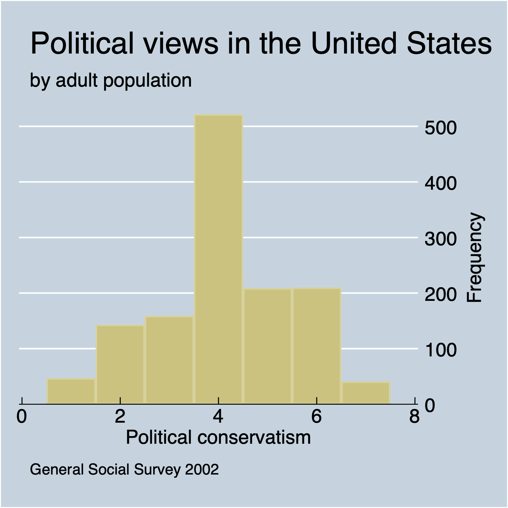
Now, we will conduct the same exercise but we will use a horizontal bar chart with the command graph hbar.
graph hbar (count), over(polviews) title(Political views in the United States) subtitle(by adult population) note(General Social Survey 2002) scheme(s1mono)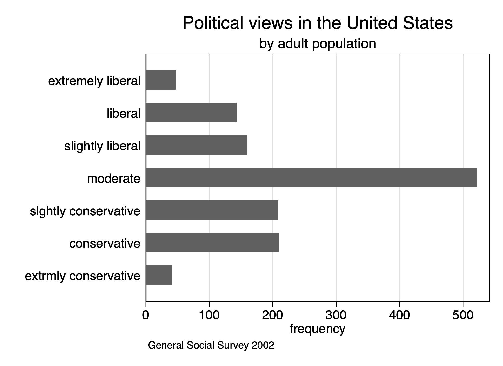
1.5 Quantitative Variables
Our final category is quantitative variables, such as discrete or continuous variables. We will look at the number of hours spent on the internet wwwhr and hours worked hrs1
For central tendency for these measures, we can use mean, median, and mode. We’ll use the summarize var, detail command to inspect the mean and median.
1.5.1 Summarize and histograms
www hours per week
-------------------------------------------------------------
Percentiles Smallest
1% 0 0
5% 0 0
10% 0 0 Obs 1,574
25% 1 0 Sum of wgt. 1,574
50% 3 Mean 5.907878
Largest Std. dev. 8.866734
75% 7 60
90% 15 64 Variance 78.61897
95% 21 100 Skewness 3.997908
99% 40 112 Kurtosis 30.39248
number of hours worked last week
-------------------------------------------------------------
Percentiles Smallest
1% 6 1
5% 16 2
10% 21 2 Obs 1,729
25% 36 2 Sum of wgt. 1,729
50% 40 Mean 41.77675
Largest Std. dev. 14.62304
75% 50 89
90% 60 89 Variance 213.8332
95% 68 89 Skewness .2834814
99% 88 89 Kurtosis 4.310339For both variables, the median is less than the mean. There is possible skewness, so we can use the command sktest to calculate the skewness and kurtosis of the data.
Skewness and kurtosis tests for normality
----- Joint test -----
Variable | Obs Pr(skewness) Pr(kurtosis) Adj chi2(2) Prob>chi2
-------------+-----------------------------------------------------------------
wwwhr | 1,574 0.0000 0.0000 1060.97 0.0000
Skewness and kurtosis tests for normality
----- Joint test -----
Variable | Obs Pr(skewness) Pr(kurtosis) Adj chi2(2) Prob>chi2
-------------+-----------------------------------------------------------------
hrs1 | 1,729 0.0000 0.0000 60.26 0.0000Based on the skewness of both variables, the probability that wwwhr is normal is 0 and the probability that hrs1 is normal is 0 as well. Based on the kurtosis, the probability that wwwhr is normal is 0 and the probability that hrs1 is normal is 0 as well.
Now we will utilize the histogram command to examine the distribution.
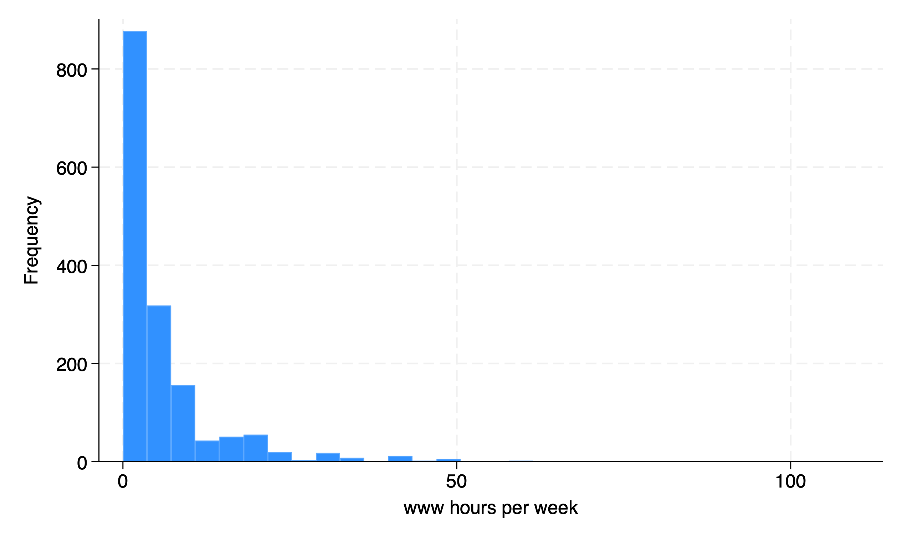
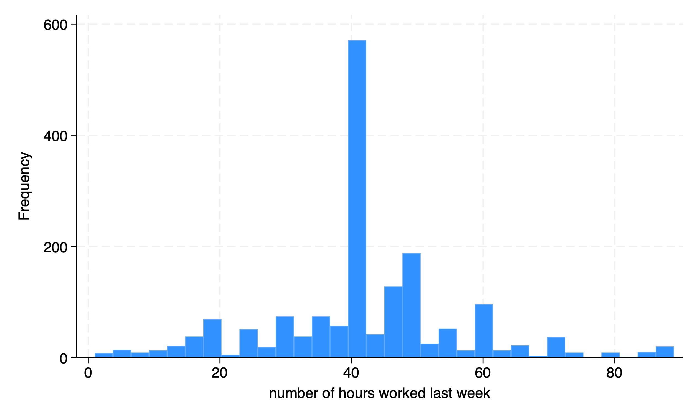
1.5.2 Split by another variable
Next week, we will start to look at two variables, but we can subset our graphs by different groups. Let’s look at internet usage in 2002 by women and men. We can use the by var, sort: prefix to our command to sort the data by sex.
-> sex = male
Variable | Obs Mean Std. dev. Min Max
-------------+---------------------------------------------------------
wwwhr | 711 7.106892 9.98914 0 112
---------------------------------------------------------------------------------------------------------------------
-> sex = female
Variable | Obs Mean Std. dev. Min Max
-------------+---------------------------------------------------------
wwwhr | 863 4.920046 7.688655 0 100We can use the table command to show descriptive statistics. We can ask fo rthe mean, median, standard deviation, interquartile range, skewness, kurtosis, and coefficient of variation. The table command has rowvars in the first parathesis and colvars in the second parathesis. So we will use sex as the rows and our descriptive statistics in the columns of our table.
table (sex) (result), statistic(mean wwwhr) statistic(p50 wwwhr) statistic(sd wwwhr) statistic(iqr wwwhr) statistic(skewness wwwhr) statistic(kurtosis wwwhr) statistic(cv wwwhr) | Mean 50th percentile Standard deviation Interquartile range Skewness Kurtosis Coefficient of variation
----------------+------------------------------------------------------------------------------------------------------------------------
respondents sex |
male | 7.106892 4 9.98914 9 3.608189 25.2577 1.405557
female | 4.920046 2 7.688655 4 4.409274 36.78389 1.56272
Total | 5.907878 3 8.866734 6 3.997908 30.39248 1.500832
-----------------------------------------------------------------------------------------------------------------------------------------We can export our table as well with the collect command after the table command. I recommend that you have export functionality in your scripts. This will reduce copy and paste requirements. You can export into a Word document, Excel document, PDF, HTML, \(LaTex\), SMCL, or Markdown.
We will export a Word docx file and a Markdown file.
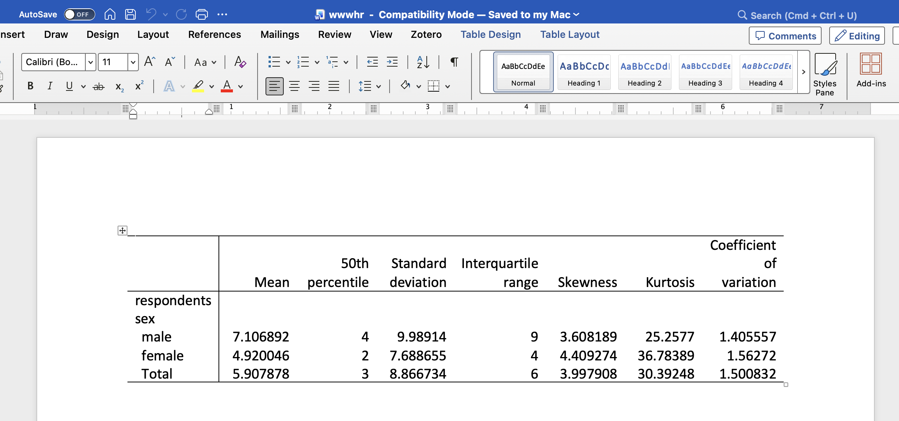
| Mean | 50th percentile | Standard deviation | Interquartile range | Skewness | Kurtosis | Coefficient of variation | |
|---|---|---|---|---|---|---|---|
| respondents sex | |||||||
| male | 7.106892 | 4 | 9.98914 | 9 | 3.608189 | 25.2577 | 1.405557 |
| female | 4.920046 | 2 | 7.688655 | 4 | 4.409274 | 36.78389 | 1.56272 |
| Total | 5.907878 | 3 | 8.866734 | 6 | 3.997908 | 30.39248 | 1.500832 |
We can also split the histogram by another variable to see if the distribution varies by sex. We can use the by(var) option to accomplish this split. We can also subset hours to less than 25 hours with the qualifier if wwwhr < 25.
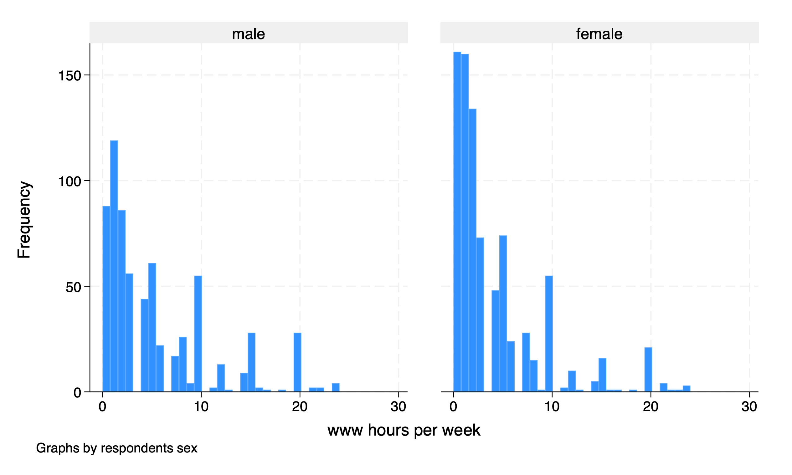
1.5.3 Box Plots
Our file set of graphs is the box plot. We can calculate and graph box plots with the command graph hbox command for horizontal box plots. We will add the option over(sex) to split the data into women and men.
graph hbox wwwhr if wwwhr < 25, over(sex) title("Hours spent on the Internet") subtitle("By sex") caption("descriptive_gss.dta") scheme(economist)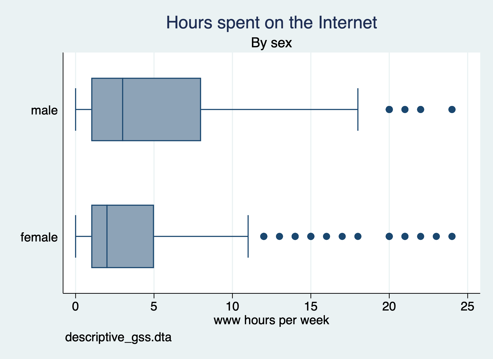